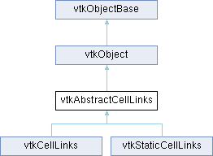

|
Etrek
|
|
Etrek
|
an abstract base class for classes that build topological links from points to cells More...
#include <vtkAbstractCellLinks.h>

Public Member Functions | |
| virtual void | BuildLinks ()=0 |
| virtual void | Initialize ()=0 |
| virtual void | Squeeze ()=0 |
| virtual void | Reset ()=0 |
| virtual unsigned long | GetActualMemorySize ()=0 |
| virtual void | DeepCopy (vtkAbstractCellLinks *src)=0 |
| virtual void | ShallowCopy (vtkAbstractCellLinks *src)=0 |
| vtkGetMacro (Type, int) | |
| vtkTypeMacro (vtkAbstractCellLinks, vtkObject) | |
| void | PrintSelf (ostream &os, vtkIndent indent) override |
| virtual void | SetDataSet (vtkDataSet *) |
| vtkGetObjectMacro (DataSet, vtkDataSet) | |
| virtual void | SelectCells (vtkIdType minMaxDegree[2], unsigned char *cellSelection)=0 |
| vtkSetMacro (SequentialProcessing, bool) | |
| vtkGetMacro (SequentialProcessing, bool) | |
| virtual void | SequentialProcessingOn () |
| virtual void | SequentialProcessingOff () |
| vtkGetMacro (BuildTime, vtkMTimeType) | |
| bool | UsesGarbageCollector () const override |
| Public Member Functions inherited from vtkObject | |
| vtkBaseTypeMacro (vtkObject, vtkObjectBase) | |
| virtual void | DebugOn () |
| virtual void | DebugOff () |
| bool | GetDebug () |
| void | SetDebug (bool debugFlag) |
| virtual void | Modified () |
| virtual vtkMTimeType | GetMTime () |
| void | PrintSelf (ostream &os, vtkIndent indent) override |
| void | RemoveObserver (unsigned long tag) |
| void | RemoveObservers (unsigned long event) |
| void | RemoveObservers (const char *event) |
| void | RemoveAllObservers () |
| vtkTypeBool | HasObserver (unsigned long event) |
| vtkTypeBool | HasObserver (const char *event) |
| vtkTypeBool | InvokeEvent (unsigned long event) |
| vtkTypeBool | InvokeEvent (const char *event) |
| std::string | GetObjectDescription () const override |
| unsigned long | AddObserver (unsigned long event, vtkCommand *, float priority=0.0f) |
| unsigned long | AddObserver (const char *event, vtkCommand *, float priority=0.0f) |
| vtkCommand * | GetCommand (unsigned long tag) |
| void | RemoveObserver (vtkCommand *) |
| void | RemoveObservers (unsigned long event, vtkCommand *) |
| void | RemoveObservers (const char *event, vtkCommand *) |
| vtkTypeBool | HasObserver (unsigned long event, vtkCommand *) |
| vtkTypeBool | HasObserver (const char *event, vtkCommand *) |
| template<class U, class T> | |
| unsigned long | AddObserver (unsigned long event, U observer, void(T::*callback)(), float priority=0.0f) |
| template<class U, class T> | |
| unsigned long | AddObserver (unsigned long event, U observer, void(T::*callback)(vtkObject *, unsigned long, void *), float priority=0.0f) |
| template<class U, class T> | |
| unsigned long | AddObserver (unsigned long event, U observer, bool(T::*callback)(vtkObject *, unsigned long, void *), float priority=0.0f) |
| vtkTypeBool | InvokeEvent (unsigned long event, void *callData) |
| vtkTypeBool | InvokeEvent (const char *event, void *callData) |
| virtual void | SetObjectName (const std::string &objectName) |
| virtual std::string | GetObjectName () const |
| Public Member Functions inherited from vtkObjectBase | |
| const char * | GetClassName () const |
| virtual vtkTypeBool | IsA (const char *name) |
| virtual vtkIdType | GetNumberOfGenerationsFromBase (const char *name) |
| virtual void | Delete () |
| virtual void | FastDelete () |
| void | InitializeObjectBase () |
| void | Print (ostream &os) |
| void | Register (vtkObjectBase *o) |
| virtual void | UnRegister (vtkObjectBase *o) |
| int | GetReferenceCount () |
| void | SetReferenceCount (int) |
| bool | GetIsInMemkind () const |
| virtual void | PrintHeader (ostream &os, vtkIndent indent) |
| virtual void | PrintTrailer (ostream &os, vtkIndent indent) |
Static Public Member Functions | |
| static int | ComputeType (vtkIdType maxPtId, vtkIdType maxCellId, vtkCellArray *ca) |
| static int | ComputeType (vtkIdType maxPtId, vtkIdType maxCellId, vtkIdType connectivitySize) |
| Static Public Member Functions inherited from vtkObject | |
| static vtkObject * | New () |
| static void | BreakOnError () |
| static void | SetGlobalWarningDisplay (vtkTypeBool val) |
| static void | GlobalWarningDisplayOn () |
| static void | GlobalWarningDisplayOff () |
| static vtkTypeBool | GetGlobalWarningDisplay () |
| Static Public Member Functions inherited from vtkObjectBase | |
| static vtkTypeBool | IsTypeOf (const char *name) |
| static vtkIdType | GetNumberOfGenerationsFromBaseType (const char *name) |
| static vtkObjectBase * | New () |
| static void | SetMemkindDirectory (const char *directoryname) |
| static bool | GetUsingMemkind () |
Protected Member Functions | |
| void | ReportReferences (vtkGarbageCollector *) override |
| Protected Member Functions inherited from vtkObject | |
| void | RegisterInternal (vtkObjectBase *, vtkTypeBool check) override |
| void | UnRegisterInternal (vtkObjectBase *, vtkTypeBool check) override |
| void | InternalGrabFocus (vtkCommand *mouseEvents, vtkCommand *keypressEvents=nullptr) |
| void | InternalReleaseFocus () |
| Protected Member Functions inherited from vtkObjectBase | |
| vtkObjectBase (const vtkObjectBase &) | |
| void | operator= (const vtkObjectBase &) |
Protected Attributes | |
| vtkDataSet * | DataSet |
| bool | SequentialProcessing |
| int | Type |
| vtkTimeStamp | BuildTime |
| Protected Attributes inherited from vtkObject | |
| bool | Debug |
| vtkTimeStamp | MTime |
| vtkSubjectHelper * | SubjectHelper |
| std::string | ObjectName |
| Protected Attributes inherited from vtkObjectBase | |
| std::atomic< int32_t > | ReferenceCount |
| vtkWeakPointerBase ** | WeakPointers |
Additional Inherited Members | |
| Static Protected Member Functions inherited from vtkObjectBase | |
| static vtkMallocingFunction | GetCurrentMallocFunction () |
| static vtkReallocingFunction | GetCurrentReallocFunction () |
| static vtkFreeingFunction | GetCurrentFreeFunction () |
| static vtkFreeingFunction | GetAlternateFreeFunction () |
an abstract base class for classes that build topological links from points to cells
vtkAbstractCellLinks is a family of supplemental objects to vtkCellArray and vtkCellTypes, enabling fast access from points to the cells using the points. vtkAbstractCellLinks is an array of links, each link representing a list of cell ids using a particular point. The information provided by this object can be used to determine neighbors and construct other local topological information.
|
pure virtual |
Build the link list array from the input dataset.
Implemented in vtkCellLinks, and vtkStaticCellLinks.
|
static |
Based on the input (i.e., number of points, number of cells, and length of connectivity array) this helper method returns the integral type to use when instantiating cell link-related classes in order to properly represent the data. The return value is one of the types defined in the enum CellLinksType enum defined previously. Subclasses may choose to instantiate themselves with different integral types for performance and/or memory reasons. This method is useful when instantiating a vtkStaticCellLinksTemplate; when instantiating a vtkCellLinks the class is hardwired for vtkIdType.
|
pure virtual |
Standard DeepCopy method.
Before you deep copy, make sure to call SetDataSet()
Implemented in vtkCellLinks, and vtkStaticCellLinks.
|
pure virtual |
Return the memory in kibibytes (1024 bytes) consumed by this cell links array. Used to support streaming and reading/writing data. The value returned is guaranteed to be greater than or equal to the memory required to actually represent the data represented by this object. The information returned is valid only after the pipeline has been updated.
Implemented in vtkCellLinks, and vtkStaticCellLinks.
|
pure virtual |
Release memory and revert to empty state.
Implemented in vtkCellLinks, and vtkStaticCellLinks.
|
overridevirtual |
Methods invoked by print to print information about the object including superclasses. Typically not called by the user (use Print() instead) but used in the hierarchical print process to combine the output of several classes.
Reimplemented from vtkObjectBase.
Reimplemented in vtkCellLinks, and vtkStaticCellLinks.
|
overrideprotectedvirtual |
Reimplemented from vtkObjectBase.
|
pure virtual |
Reset to a state of no entries without freeing the memory.
Implemented in vtkCellLinks, and vtkStaticCellLinks.
|
pure virtual |
These methods are not virtual due to performance concerns. However, subclasses of this class will implement them, using a combination of static_cast<> and templating used to invoke the methods in a way that the compiler can optimize.
Get the number of cells using the point specified by ptId: vtkIdType GetNcells(vtkIdType ptId)
Return a list of cell ids using the point. TIds *GetCells(vtkIdType ptId) Select all cells with a point degree in the range [minDegree,maxDegree). The degree is the number of cells using a point. The selection is indicated through the provided unsigned char array, with a non-zero value indicates selection. The memory allocated for cellSelection must be the maximum cell id referenced in the links.
Implemented in vtkCellLinks, and vtkStaticCellLinks.
|
virtual |
Set/Get the points/cells defining this dataset.
|
pure virtual |
Standard ShallowCopy method.
Before you shallow copy, make sure to call SetDataSet()
Implemented in vtkCellLinks, and vtkStaticCellLinks.
|
pure virtual |
Reclaim any unused memory.
Implemented in vtkCellLinks, and vtkStaticCellLinks.
|
inlineoverridevirtual |
Handle the dataset <-> Links loop.
Reimplemented from vtkObjectBase.
| vtkAbstractCellLinks::vtkGetMacro | ( | BuildTime | , |
| vtkMTimeType | ) |
Return the time of the last data structure build.
| vtkAbstractCellLinks::vtkGetMacro | ( | Type | , |
| int | ) |
Return the type of locator (see enum above).
| vtkAbstractCellLinks::vtkSetMacro | ( | SequentialProcessing | , |
| bool | ) |
Force sequential processing (i.e. single thread) of the link building process. By default, sequential processing is off. Note this flag only applies if the class has been compiled with VTK_SMP_IMPLEMENTATION_TYPE set to something other than Sequential. (If set to Sequential, then the filter always runs in serial mode.) This flag is typically used for benchmarking purposes.
| vtkAbstractCellLinks::vtkTypeMacro | ( | vtkAbstractCellLinks | , |
| vtkObject | ) |
Standard type and print methods.